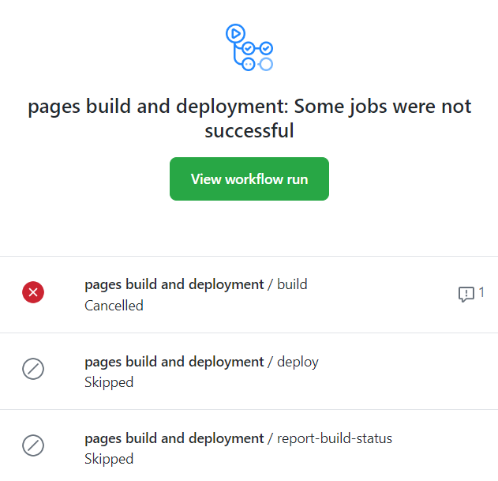

For my final project, I decided to create a simple sketch app using P5.js that allows the user to draw, erase, pick the size of pen or eraser, choose a color for the pen, clear canvas, and save their work.
In order to use my drawing app, you can simply open the Paint Prototype from the link and paint from there directly. Alternatively, you could download the code from my GitHub Respository and run it from your local server.
I broke this project up into several steps to complete it:
I actually didn't have very significant issues in the programming part of this assignment,
but I ran into an issue when trying to deploy my website using GitHub Pages. Every
time I tried to deploy, I kept getting this issue for some reason:

I tried so many different things, such as creating a new GitHub repository for my project, adding a folder into my portfolio to contain the files instead, and ultimately went back to the original repository because I was then getting a blank page after the GitHub Pages were deployed. Then I found that the issue was in my HTML file, so I fixed the errors and now it works.
Here are some ideas and features I might like to add to my project in the future for the final version:
Here are some resources I found useful while working on this project:
Now that I've completed my prototype, I think I was a bit ambitious in some of the functions that I wanted to implement. For example, filling a shape is going to be a lot of additional work that I did not plan for, and even drawing a shape was more work than I originally anticipated. I actually tried to do the shape feature as part of the prototype since I finished most other things, but I couldn't figure it out so that may need to wait for the final prototype or I may need to adjust some things around as needed.
I think overall, the prototype took me about as long as I expected but I did not expect to run into that issue with deployment so that was definitely frustrating. For my MP3 game and portfolio website, deployment was not an issue at all so I was really surprised it wasn't working here. It probably took me several hours just to figure that part out, unfortunately.
I adjusted a few things from my original envisioned interface (in my proposal writeup). For example, I moved the "clear" button to the opposite side of the menu from "save" rather than having them right next to each other so that users don't accidentally clear their entire drawing when they're trying to save it, since that would be pretty bad UI design.
Additionally, I may add or cut some features depending on how difficult the implementation ends up being for those features, such as the "draw shape" or "fill" features. I may add something else instead if those end up being too difficult or time consuming.